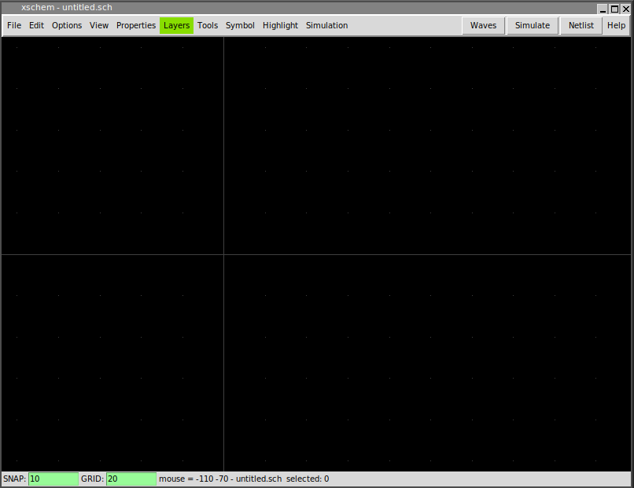
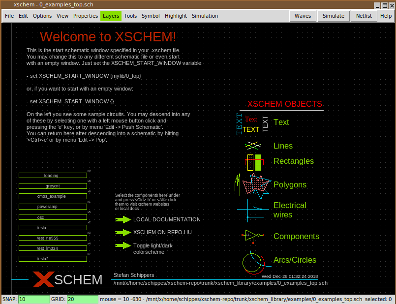
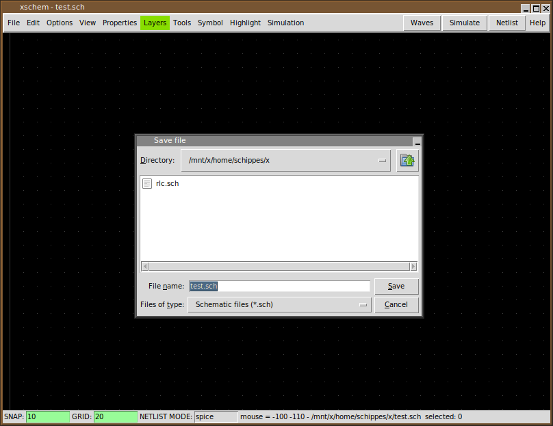

RUN XSCHEM
Assuming xschem is installed in one of the ${PATH} search paths just execute:
user:~$ xschem
the xschem window should appear. If xschem is not in the search path then specify its full pathname.
if a filename is given that file will be loaded on startup:
user:~$ xschem .../xschem_library/examples/0_examples_top.sch
XSCHEM COMMAND LINE OPTIONS
xschem accepts short (-h) or long (--help) options:
usage: xschem [options] [schematic | symbol ]
Options:
-h --help Print this help.
-b --detach Detach Xschem from console (no output and no input from console)
-n --netlist Do a netlist of the given schematic cell.
-v --version Print version information and exit.
-V --vhdl Set netlist type to VHDL.
-S --simulate Run a simulation of the current schematic file
(spice/Verilog/VHDL, depending on the netlist
type chosen).
-w --verilog Set netlist type to Verilog.
--tcl <tcl_cmd> Execute specified tcl instructions before any other action,
after sourcing xschemrc, this can be used to change xschemrc variables.
--preinit <tcl_cmd> Execute specified tcl instructions before any other action,
and before loading xschemrc.
--script <file> Execute specified tcl file as a command script (perhaps with xschem commands).
--command <tcl_cmd> Execute specified tcl commands after completing startup.
--diff <file> Show differences with given file.
--tcp_port <number> Listen to specified tcp port for client connections. (number >=1024).
-i --no_rcload Do not load any xschemrc file.
--netlist_path <path>
-o <path> Set output path for netlist.
--netlist_filename <file>
-N <file> Set name (only name or full path) of top level netlist file.
-t --tedax Set netlist type to tEDAx.
-s --spice Set netlist type to SPICE.
-y --symbol Set netlist type to SYMBOL (used when drawing symbols)
-x --no_x Don't use X (only command mode).
-z --rainbow Use a rainbow-looking layer color table.
-W --waves Show simulation waveforms.
-f --flat_netlist Set flat netlist (for spice format only).
-r --no_readline Start without the tclreadline package, this is necessary
--pipe if stdin and stdout are to be redirected. This also prevents xschem
from closing stdin / stdout / stderr even if invoked from pipes.
-c --color_ps Set color postscript.
--plotfile <file> Use <file> as output for plot (png, svg, ps).
--rcfile <file> Use <file> as a rc file for startup instead of the
default xschemrc.
-p --postscript
--pdf Export pdf schematic.
--png Export png schematic.
--svg Export svg schematic.
-q --quit Quit after doing things (no interactive mode).
-l <file>
--log <file> Set a log file.
-d <n>
--debug <n> Set debug level: 1, 2, 3,.. C program debug.
-1, -2, -3... TCL frontend debug.
xschem: interactive schematic capture program
Example: xschem counter.sch
the schematic file `counter.sch' will be loaded.
CREATING A NEW SCHEMATIC
To create a new schematic run xschem and give a non existent filename:
xschem aaa.sch
You can save the schematic by pressing '<ctrl shift>s' or by using the menu File - Save As:
If no filename change is needed you can just use File - Save. Now a new empty schematic file is created. You can use this test.sch for testing while reading the manual. After exiting XSCHEM you can load directly this schematic with the following commands, they are all equivalent.
xschem /home/schippes/x/test.sch
# or ...
xschem ${HOME}/schippes/x/test
you can load test.sch when xschem is running by using the load command '<ctrl>o' key or by menu Open command. Use the file selector dialog to locate the schematic and load it in. When loading a new file XSCHEM asks to save the currently loaded schematic if it has been modified.